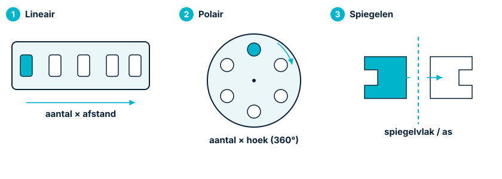
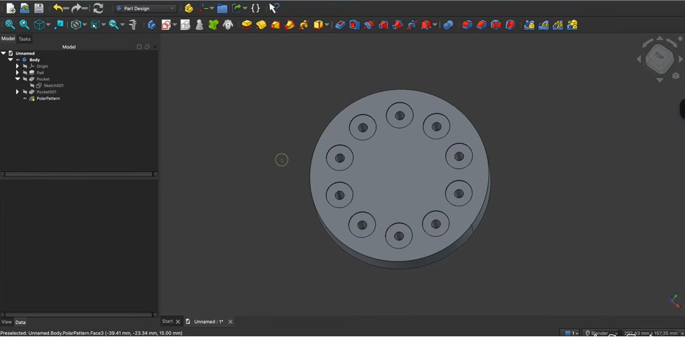

Patronen & spiegelenRéseaux & symétriePatterns & mirroring
Je hebt vaak hetzelfde element meerdere keren nodig: een rij ventilatiegleuven, vier schroefgaten, een uitsparing aan beide zijden. Die teken je niet één voor één. Met patronen en spiegelen maak je in één bewerking tientallen nette, parametrische kopieën.Vous répétez souvent le même élément : une rangée de fentes, quatre trous de vis, un évidement des deux côtés. Avec les réseaux et la symétrie, vous créez des dizaines de copies paramétriques en une seule opération.You often need the same feature many times: a row of vents, four screw holes, an opening on both sides. Don't draw them one by one. With patterns and mirroring you make dozens of clean, parametric copies in one operation.
- een feature herhalen met een lineair patroonrépéter une fonction avec un réseau linéairerepeat a feature with a linear pattern
- gaten rond een as verdelen met een polair patroonrépartir des trous avec un réseau circulairespace holes around an axis with a polar pattern
- een feature spiegelen naar de andere zijdesymétriser une fonctionmirror a feature to the other side
- begrijpen waarom kopieën parametrisch gekoppeld blijvencomprendre le lien paramétrique des copiesunderstand why the copies stay parametrically linked
Workbench: Part Design. Patronen werken op een of meer features (bv. een Pocket of een gat), niet op losse schetslijnen.Atelier : Part Design. Les réseaux agissent sur des fonctions, pas sur des traits de croquis.Workbench: Part Design. Patterns act on features (e.g. a Pocket or hole), not loose sketch lines.
Commando: Part Design → Een patroon toepassen → Lineair patroon / Polair patroon / Gespiegeld. In het Taken-paneel zet je richting/as, het aantal exemplaren (occurrences) en de afstand of hoek.Commande : Part Design → Appliquer un réseau → Réseau linéaire / circulaire / Symétrie. Réglez la direction/l'axe, le nombre d'occurrences et l'écart ou l'angle.Command: Part Design → Apply a pattern → Linear / Polar / Mirrored. In the Tasks panel set the direction/axis, the number of occurrences and the spacing or angle.
- Selecteer in de modelboom de feature die je wil herhalen of spiegelen.Sélectionnez la fonction à répéter/symétriser.Select the feature to repeat or mirror.
- Kies het patroon (Lineair, Polair of Gespiegeld).Choisissez le réseau (linéaire, circulaire ou symétrie).Pick the pattern (Linear, Polar or Mirrored).
- Stel richting/as in (een rand of een basisas) en het aantal + afstand/hoek → OK.Réglez direction/axe, nombre + écart/angle → OK.Set direction/axis, count + spacing/angle → OK.
01De drie operaties in één oogopslagLes trois opérationsThe three operations
Drie manieren om een feature te vermenigvuldigen, elk voor een ander doel:Trois façons de multiplier une fonction :Three ways to multiply a feature, each for a different goal:

02Lineair patroon: een rij ventilatiegleuvenRéseau linéaire : des fentesLinear pattern: a row of vents
Een lineair patroon herhaalt een feature in een rechte lijn. Je tekent één ventilatiegleuf (een smalle Pocket), en het patroon maakt er bijvoorbeeld vijf, netjes op gelijke afstand. Je geeft een richting (een rand of basisas), het aantal exemplaren en de totale lengte of de afstand tussen de kopieën.Le réseau linéaire répète en ligne droite. Dessinez une fente (Pocket), le réseau en fait cinq régulières : direction, nombre, longueur/écart.A linear pattern repeats a feature in a straight line. Draw one vent (a thin Pocket); the pattern makes, say, five evenly spaced. You give a direction, the count and the length/spacing.
03Polair patroon: gaten rond een asRéseau circulaire : trous autour d'un axePolar pattern: holes around an axis
Een polair patroon verdeelt kopieën rond een as. Ideaal voor gaten of openingen die regelmatig op een cirkel liggen. Je kiest de as (vaak de normale schetsas of een basisas), het aantal, en de hoek waarover ze verdeeld worden (360° voor een volledige cirkel). Zo maak je in seconden een rozet van bevestigingsgaten of luchtgaten.Le réseau circulaire répartit autour d'un axe : choisissez l'axe, le nombre et l'angle (360° = cercle complet).A polar pattern spreads copies around an axis. Pick the axis (often the normal sketch axis or a base axis), the count, and the angle (360° for a full circle).

04Spiegelen: één keer tekenen, beide kantenSymétrie : dessiner une foisMirror: draw once, get both sides
Spiegelen (mirror) maakt een gespiegelde kopie van een feature t.o.v. een vlak of as. Heb je aan de ene zijwand een connectoruitsparing getekend en wil je dezelfde aan de overkant? Spiegel ze t.o.v. een middenvlak en ze staat perfect symmetrisch. Wijzig je het origineel, dan past de gespiegelde kopie zich aan.La symétrie crée une copie miroir par rapport à un plan/axe. Une ouverture sur une paroi → la même en face, parfaitement symétrique.Mirror makes a mirrored copy across a plane or axis. A connector opening on one wall → the same on the opposite wall, perfectly symmetric. Change the original and the mirror follows.
Patronen en spiegelingen zijn parametrische kopieën: ze blijven gekoppeld aan het origineel. Wijzig je de bron-feature (bv. de gleuf breder), dan veranderen alle kopieën mee. Je beheert dus één element in plaats van twintig.Réseaux et symétries sont des copies paramétriques liées à l'original : modifiez la source, toutes suivent.Patterns and mirrors are parametric copies linked to the original: change the source and all copies update. You manage one feature, not twenty.
Geef je behuizing een rij ventilatiegleuven bovenaan (lineair patroon), plaats vier schroefgaten in één patroon, en spiegel een uitsparing naar de tegenoverliggende wand. Eén wijziging aan de bron en alles blijft kloppen — perfect voor nette, symmetrische radioapparatuur.Une rangée de fentes, quatre trous en un réseau, une ouverture symétrisée : du matériel radio net et régulier.Add a row of vents, four screw holes in one pattern, and mirror an opening to the opposite wall — neat, symmetric radio gear.
Teken in de bovenkant van je bak één smalle ventilatiegleuf (Pocket) en maak er met een lineair patroon vijf, op gelijke afstand. Maak daarna vier schroefgaten met een patroon (lineair of polair). Spiegel tot slot je connectoruitsparing naar de overkant. Wijzig de breedte van de bron-gleuf en zie alle kopieën mee veranderen.Une fente → réseau linéaire de cinq ; quatre trous en réseau ; symétrisez l'ouverture. Modifiez la source et observez.Draw one vent → linear pattern of five; four screw holes via a pattern; mirror the connector opening. Change the source width and watch all copies follow.
05Veelgemaakte foutenErreurs fréquentesCommon mistakes
- Verkeerde richting of as. Het patroon loopt de verkeerde kant op. Kies een duidelijke rand of basisas, en gebruik "omkeren" indien nodig.Mauvaise direction/axe. Choisissez une arête/un axe clair, inversez si besoin.Wrong direction or axis. Pick a clear edge or base axis; use "reverse" if needed.
- Kopieën overlappen. Te veel exemplaren op te weinig lengte botsen. Stem aantal en afstand op elkaar af.Copies qui se chevauchent. Accordez nombre et écart.Overlapping copies. Too many over too little length collide. Balance count and spacing.
- Spiegelen over het verkeerde vlak. Controleer welk vlak/welke as je kiest; gebruik desnoods een hulpvlak (H14).Mauvais plan de symétrie. Vérifiez le plan/l'axe ; au besoin un plan de référence (H14).Mirroring across the wrong plane. Check the plane/axis; use a datum plane if needed (H14).
Wil je meerdere bewerkingen combineren (bv. een patroon én een spiegeling, of een patroon in twee richtingen)? Dan bestaat ook de multi-transformatie-bewerking, die meerdere transformaties in één stap samenbrengt.Pour combiner plusieurs transformations (réseau + symétrie, ou réseau en deux directions), il existe la multitransformation.To combine several transformations (a pattern plus a mirror, or a pattern in two directions), there is also the multi-transform feature.
06Samenvatting
Met een lineair patroon (rij), een polair patroon (cirkel) en spiegelen (om een vlak/as) vermenigvuldig je features snel en netjes. Je werkt op features in Part Design, niet op schetslijnen, en alle kopieën blijven parametrisch gekoppeld aan het origineel. Zo bouw je ventilatiegleuven, gatenrijen en symmetrische uitsparingen in seconden.Réseau linéaire, circulaire et symétrie multiplient vos fonctions ; les copies restent liées à l'original.A linear pattern, a polar pattern and mirroring multiply features fast; all copies stay parametrically linked to the original.
- Patronen werken op features, niet op schetslijnen.Les réseaux agissent sur des fonctions.Patterns act on features, not sketch lines.
- Lineair = aantal × afstand; polair = aantal × hoek; spiegelen = om een vlak/as.Linéaire = nombre × écart ; circulaire = nombre × angle ; symétrie = plan/axe.Linear = count × spacing; polar = count × angle; mirror = plane/axis.
- Alle kopieën blijven gekoppeld aan het origineel.Copies liées à l'original.All copies stay linked to the original.